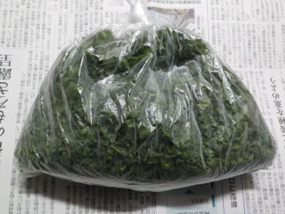
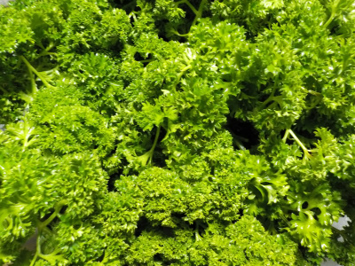
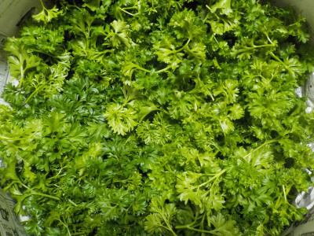

パセリを冷凍しました。
2021/2/19

一度に沢山食べれないので小さくちぎって冷凍しました。
大量にあるので当分の間パセリ使いたい放題です。
次の収獲までに使い切れるよう、こまめに使おうｔ思います。
2021/2/19

一度に沢山食べれないので小さくちぎって冷凍しました。
大量にあるので当分の間パセリ使いたい放題です。
次の収獲までに使い切れるよう、こまめに使おうｔ思います。
2021/02/13

花が咲いても枯れないなーって不思議に思っていたパセリが成長して、沢山葉っぱが出ていたので収穫しました。
毎年枯れずに育つと楽ちんでいいですね。
連作になってダメかな？
木みたいに連作OKにならないかな？
2020/05/28

パセリの花が咲きそうです。
開花後は枯れるので、その前に大量に収穫しました。
生で一度に食べきれないし、冷凍だとかさばって邪魔なのでドライパセリにします。
2019/05/19
ドライパセリを大量に作りました。
2019/02/20
パセリが育っているので収穫です。
2018/06/10
パセリの種まきはあきらめました。
2018/05/12
パセリの種を再度蒔きました。
2018/03/21
パセリの種をスポンジに蒔きました。
2014/11/02
パセリがパセリっぽくなってきました。
2014/10/09
パセリの芽なのかな？
2014/09/21
イタリアンパセリの種まきをしました。
2014/07/26
パセリの種を採りました。
2014/06/15
パセリの花が咲いています。
畑仕事じゃないよ。